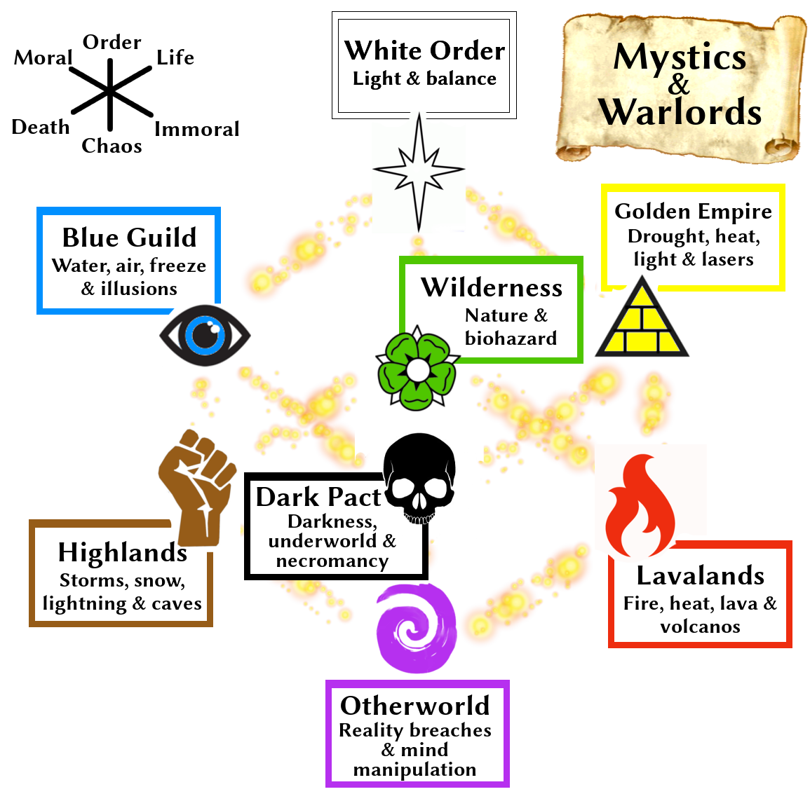

Jerrylabs present
Fantasy living card game
Milleniums ago, the seven emperors has agreed to divide the world according to the spheres of they control and magic they use to run their empires.
They were known as:
They mined the magic energy from the universe and used it to keep their worlds separated that there was almost impossible to travel among them. It was artificial state of balance, natural magic powers were almost depleted and hard to control. Their folks lived in peace and the magic was inherited through the dynasties of each of these 7 founders.
Unfortunately they have missed a point. Balance was kept for thousands of years, but it was not perfect. There were one aspect of magic, which could not be used for keeping the balance, the most evil, unpredictable and chaotic energy. This magic energy accumulated over the years, become stronger and stronger, requesting more and more magic power from the seven powers. The heirs of kings knew there was an emerging problem, but used that information only into their own potential profit. The worlds of seven spheres started to feel the problems. The magic used originally form comfort of the citizens were needed more to keep the borders. More and more reality breaches appeared.
The heirs of original seven emperors did not manage to keep people content. More and more heretic voices about connecting the worlds arise especially from Highlands, Lavalands and Wilderness. However nobody knew what's really going on.
The massive amount of chaotic energy accumulated for millenias bursted out like gigantic flood from a dam and caused reality breaches that connected the worlds together! The energy from each world is now flowing to its neighbors and some of the worlds' inhabitants is starting to feel the powers they did not have for hundreds of generations.
There is nobody in control and world is balancing on the edge of chaos. Who can combine the powers of 8 aspects of magic and gather the mightiest army to conquer the new world?